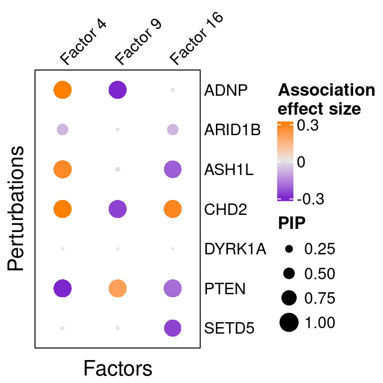
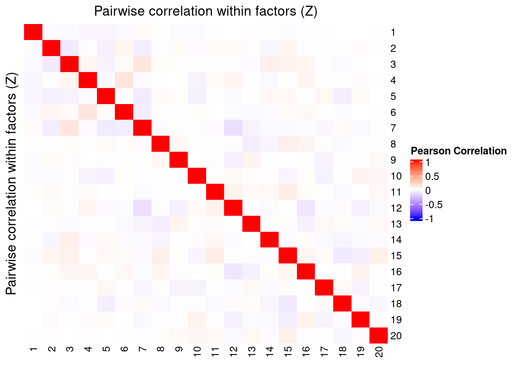
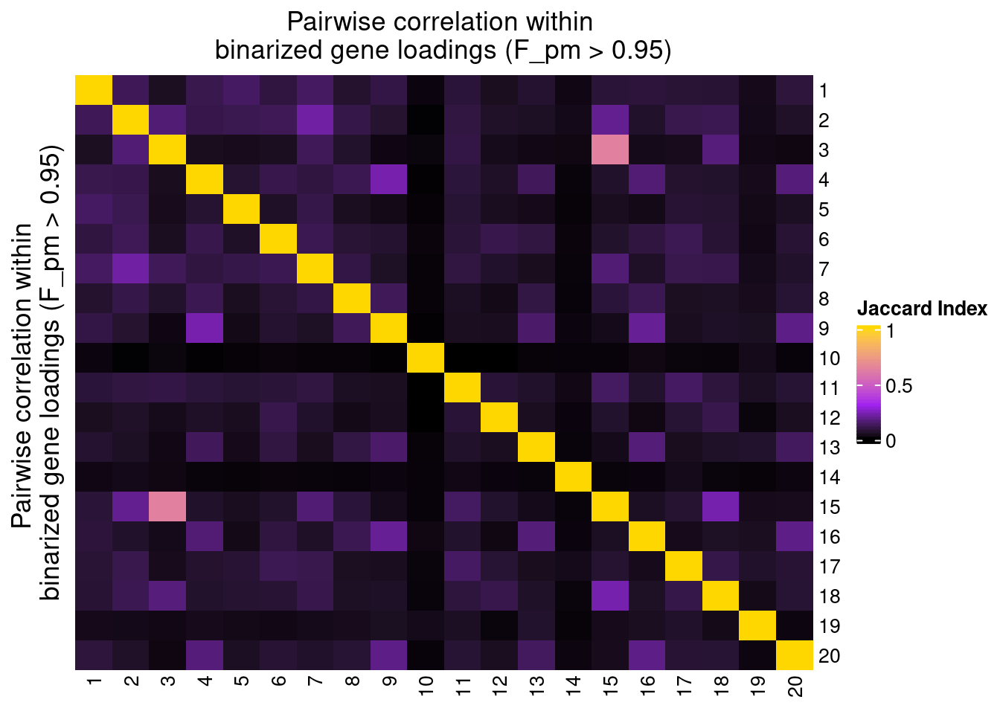
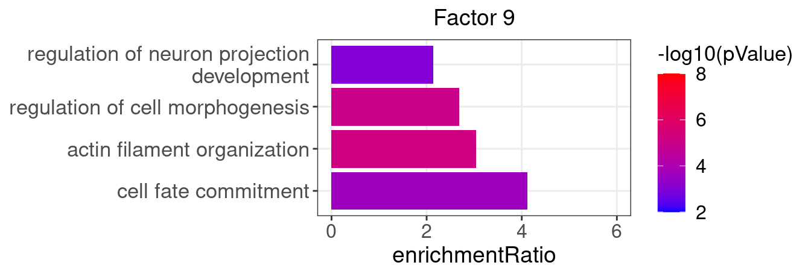
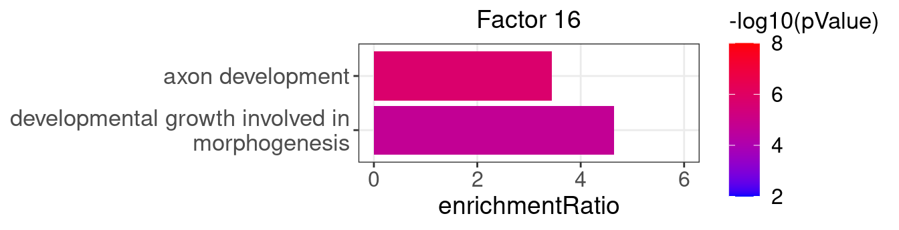
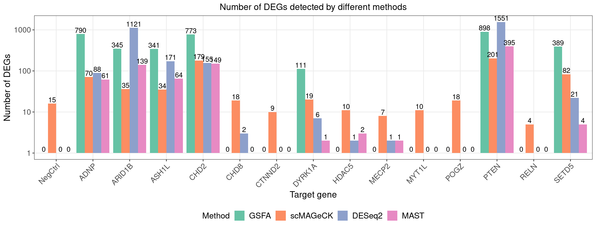
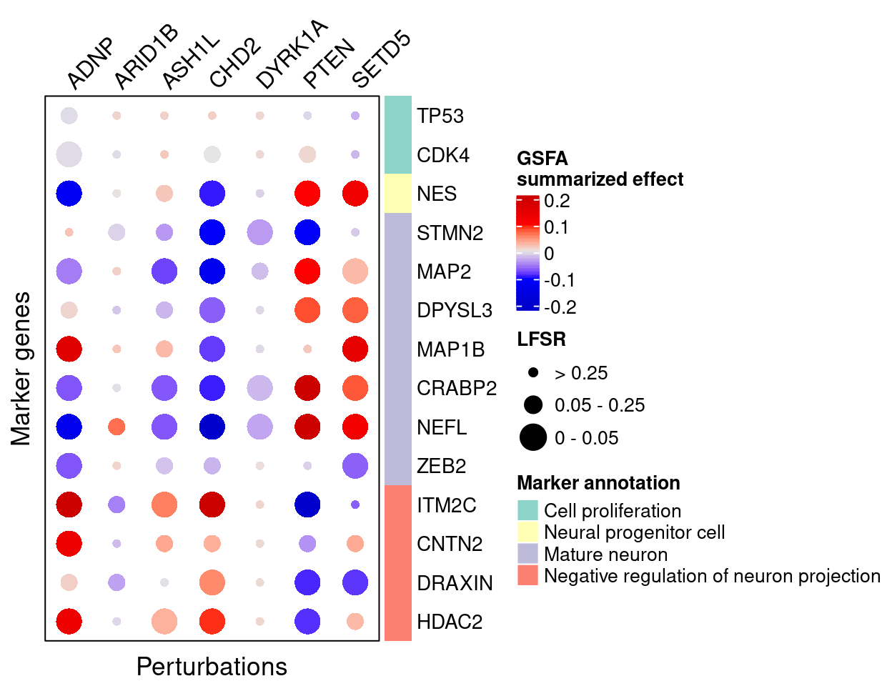
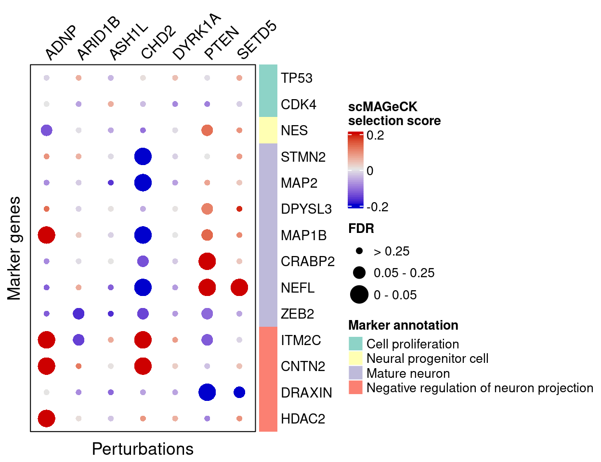
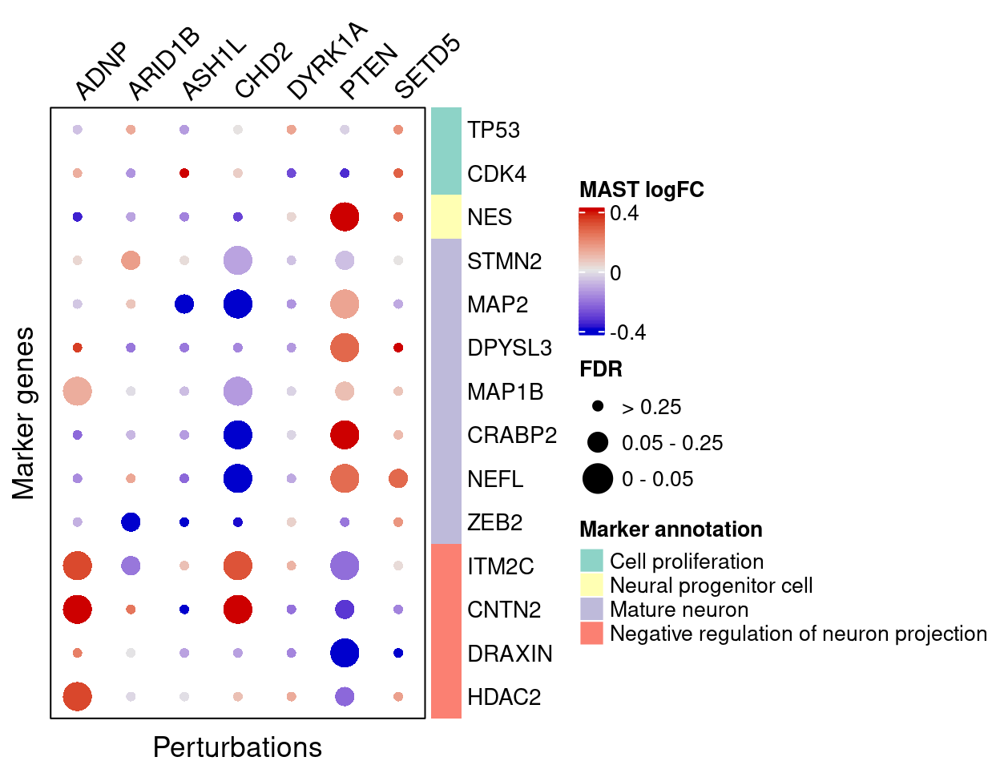

1 Background
1.1 Input data and pre-processing
Source:
High-throughput single-cell functional elucidation of neurodevelopmental disease-associated genes reveals convergent mechanisms altering neuronal differentiation, GEO accession: GSE142078.
Perturbations:
CRISPR knock-down of 14 autism spectrum disorder (ASD)–associated genes (3 gRNAs per gene) + 5 non-targeting gRNAs.
Cells:
Lund human mesencephalic (LUHMES) neural progenitor cell line.
Cells from 3 batches were merged together into 1 analysis. All cells have only a single type of gRNA readout. Quality control resulted in 8708 cells.
Genes:
Top 6000 genes ranked by the multinomial deviance statistics were kept.
Normalization:
Deviance residual transformation.
Batch effect, unique UMI count, library size, and mitochondria percentage were all corrected for. The corrected and scaled expression data were used as input for subsequent GSFA.
1.2 GSFA
Input:
In addition to the expression matrix, we have a binary perturbation matrix (\(G\)) consisting of 15 types (14 genes + negative control) of gene-level knock-down conditions across cells.
For Gibbs sampling, we specified 20 factors initialized from truncated SVD. Results were obtained from 3000 iterations, with the posterior mean estimates averaged over the last 1000 iterations.
2 Factor ~ Perturbation Association
2.1 Perturbation effects on factors (\(\beta\))
All targets and factors (Figure S6A): 
Effects of selected perturbations on factors (Figure 5A):

2.2 Factor-perturbation association p values

3 Factor Interpretation
3.1 Correlation within factors


3.2 Gene loading in factors
Neuronal differentiation markers:
| gene_name | type | protein_name | gene_ID |
|---|---|---|---|
| TP53 | Cell proliferation | Tumor protein p53 | ENSG00000141510 |
| CDK4 | Cell proliferation | Cyclin dependent kinase 4 | ENSG00000135446 |
| NES | Neural progenitor cell | Nestin | ENSG00000132688 |
| STMN2 | Mature neuron | Stathmin-2 | ENSG00000104435 |
| MAP2 | Mature neuron | Microtubule associated protein 2 | ENSG00000078018 |
| DPYSL3 | Mature neuron | Dihydropyrimidinase like 3 | ENSG00000113657 |
| MAP1B | Mature neuron | Microtubule associated protein 1B | ENSG00000131711 |
| CRABP2 | Mature neuron | Cellular retinoic acid binding protein 2 | ENSG00000143320 |
| NEFL | Mature neuron | Neurofilament Light Chain | ENSG00000277586 |
| ZEB2 | Mature neuron | Zinc finger E-box binding homeobox 2 | ENSG00000169554 |
| ITM2C | Negative regulation of neuron projection | Integral membrane protein 2C | ENSG00000135916 |
| CNTN2 | Negative regulation of neuron projection | Contactin-2 | ENSG00000184144 |
| DRAXIN | Negative regulation of neuron projection | Dorsal inhibitory axon guidance protein | ENSG00000162490 |
| HDAC2 | Negative regulation of neuron projection | Histone deacetylase 2 | ENSG00000196591 |
All factors (Figure S6B):

Selected factors (Figure 5C):

3.3 GO enrichment analysis in factors
Foreground genes: Genes w/ non-zero loadings in each factor (gene PIP > 0.95);
Background genes: all 6000 genes used in GSFA;
Statistical test: hypergeometric test (over-representation test);
Gene sets: Gene ontology "Biological Process" (non-redundant).
Figure 5D:



4 DEG Interpretation
4.1 Number of DEGs detected by different methods
| KO | ADNP | ARID1B | ASH1L | CHD2 | CHD8 |
| Num_genes | 790 | 345 | 341 | 773 | 0 |
| KO | CTNND2 | DYRK1A | HDAC5 | MECP2 | MYT1L |
| Num_genes | 0 | 111 | 0 | 0 | 0 |
| KO | Nontargeting | POGZ | PTEN | RELN | SETD5 |
| Num_genes | 0 | 0 | 898 | 0 | 389 |
Figure 5E:

4.2 Perturbation effects on marker genes
4.2.1 GSFA
Figure 5G:

4.2.2 scMAGeCK
Figure 5H:

Figure S5C:

4.2.3 MAST
Figure S5D:

4.3 GO enrichment in DEGs
Foreground genes: Genes w/ GSFA LFSR < 0.05 under each perturbation;
Background genes: all 6000 genes used in GSFA;
Statistical test: hypergeometric test (over-representation test);
Gene sets: Gene ontology "Biological Process" (non-redundant).
Figure S5E: